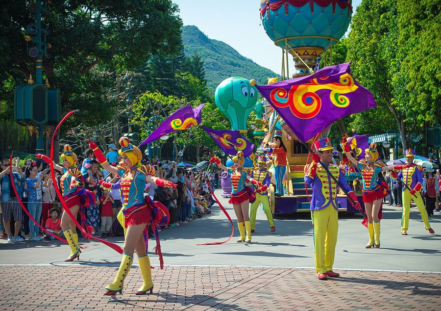
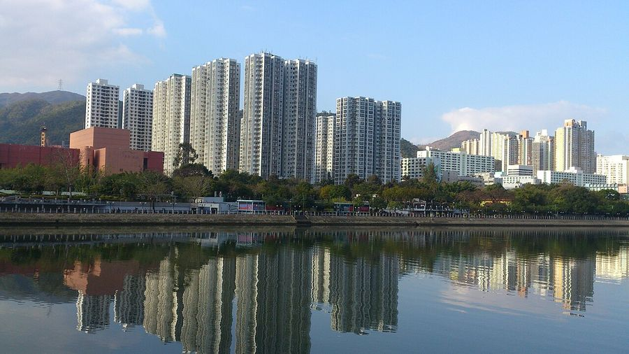

Hong Kong
China · 22.2950°N 114.1690°E

17jiangz1 · CC BY-SA 4.0
{kind=link}
Make this Notebook Trusted to load map: File -> Trust Notebook
Điểm tham quan
- Victoria Peak & Peak Tram
- Star Ferry qua cảng Victoria not found
- Tsim Sha Tsui – Avenue of Stars – Symphony of Lights
- Đại Phật Thiên Đàn & tu viện Po Lin (Ngong Ping 360, Lantau) not found

Hong Kong Disneyland- chùa Wong Tai Sin, Man Mo Temple not found
- chợ đêm Temple Street, Mong Kok not found
- làng chài Tai O

Sha Tin – Vạn Phật Tự- M+ và Palace Museum ở West Kowloon not found
Dệt may & smart textile
- - **HKRITA** (Hong Kong Research Institute of Textiles and Apparel) — viện R&D dệt công lập, thành lập 2006, đặt tại PolyU; nghiên cứu waterless processing, green tech và **active performance wearable systems**; vận hành **Open Lab** ~20.000 sq ft. - **PolyU — Institute of Textiles and Clothing (ITC)** — nhóm mạnh về e-textile: công bố phương pháp phủ nano bạc (AgNP) lên vải cotton để làm **e-textile dẫn điện, chống nước, giặt được** — trùng đúng lớp công nghệ conductive yarn/fabric trong hồ sơ. - **Novetex Upcycling Factory (The Billie System)** ở Tai Po — tái chế sợi cơ học không dùng nước, do HKRITA đồng phát triển; đối chiếu được với hướng textile-to-textile của ALT TEX / Ambercycle. - Hệ sinh thái công nghiệp: Esquel Group, Lai Tak, Hong Kong Science Park, Nano and Advanced Materials Institute (NAMI) not found